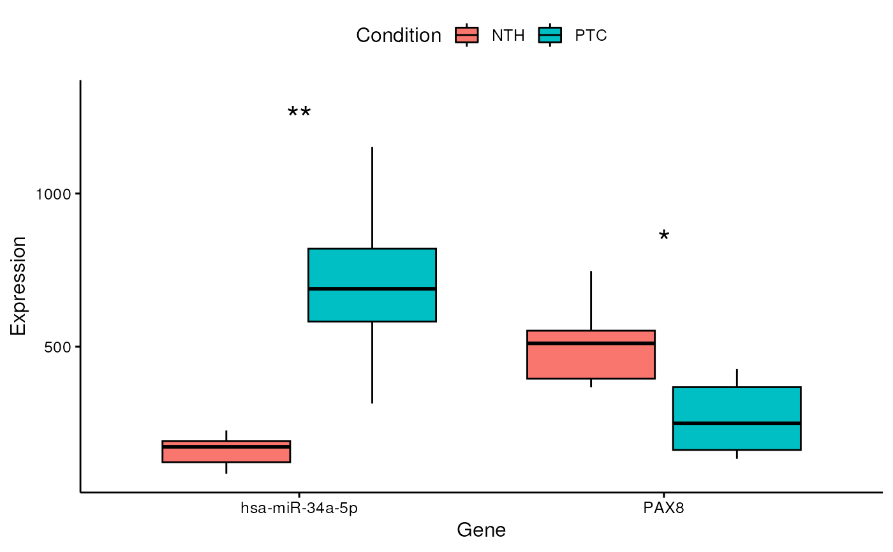

Represent differentially expressed miRNAs/genes as boxplots, barplots or violinplots
Source:R/visualization.R
plotDE.RdThis function is able to produce boxplots, barplots and violinplots that are
useful to visualize miRNA and gene differential expression. The user just
has to provide a vector of interesting miRNA/genes that he wants to plot
(e.g. "hsa-miR-34a-5p", "hsa-miR-146b-5p", "PAX8"). The chart type can be
specified through the graph parameter.
Usage
plotDE(
mirnaObj,
features,
condition = NULL,
graph = "boxplot",
linear = TRUE,
showSignificance = TRUE,
starSig = TRUE,
pCol = "adj.P.Val",
sigLabelSize = 7,
digits = 3,
nameAsTitle = FALSE,
colorScale = NULL,
fontSize = 12,
fontFamily = "",
legend = "top",
borderWidth = 1,
allBorders = FALSE,
grid = FALSE
)Arguments
- mirnaObj
A
MirnaExperimentobject containing miRNA and gene data- features
A character vector containing the genes/miRNAs to plot
- condition
It must be NULL (default) to plot expression based on the group variable used for differential expression analysis. Alternatively, it must be a character/factor object that specifies group memberships (eg. c("healthy, "healthy", "disease", "disease"))
- graph
The type of plot to produce. It must be one of
boxplot(default),barplot,violinplot- linear
Logical, whether to plot expression levels in linear scale or in log2 space. Default is TRUE in order to use the linear space
- showSignificance
Logical, whether to display statistical significance or not. Default is TRUE
- starSig
Logical, whether to represent statistical significance through stars. Default is TRUE, and the significance scale is: * for \(p < 0.05\), ** for \(p < 0.01\), *** for \(p < 0.001\), and **** for \(p < 0.0001\). If
starSigis set to FALSE, p-values or adjusted p-values will be reported on the plot as numbers- pCol
The statistics used to evaluate comparison significance. It must be one of
P.Value, to use unadjusted p-values, andadj.P.Val(default), to use p-values corrected for multiple testing- sigLabelSize
The size for the labels used to show statistical significance. Default is 7, which is well suited for representing p-values as significance stars. However, if
starSigis set to FALSE, the user might have to downsize this parameter- digits
The number of digits to show when p-values are reported as numbers (when
starSigis FALSE). Default is 3- nameAsTitle
Logical, if set to TRUE, the miRNA/gene name will be added as plot title, and the x-axis and legend will be removed. Note that this option is only considered if
featurescontains just one miRNA/gene. Default is FALSE- colorScale
It must be a named character vector where values correspond to R colors, while names coincide with the groups specified in the
conditionparameter (eg. c("healthy" = "green", "disease" = "red")). Default is NULL, in order to use the default color scale. Available color formats include color names, such as 'blue' and 'red', and hexadecimal colors specified as #RRGGBB- fontSize
The base size for text elements within the plot. Default is 12
- fontFamily
The base family for text elements within the plot
- legend
The position of the legend. Allowed values are
top,bottom,right,leftandnone. The default setting istopto show a legend above the plot. Ifnoneis specified, the legend will not be included in the graph.- borderWidth
The width of plot borders (default is 1)
- allBorders
Logical, whetether to show all panel borders, or just the bottom and left borders. Default is FALSE
- grid
Logical, whether to show grid lines or not. Default is FALSE
Author
Jacopo Ronchi, jacopo.ronchi@unimib.it
Examples
# load example MirnaExperiment object
obj <- loadExamples()
# produce a boxplot for PAX8 and miR-34a-5p
plotDE(obj, features = c("hsa-miR-34a-5p", "PAX8"))

# produce a barplot for PAX8 and miR-34a-5p without significance
plotDE(obj,
features = c("hsa-miR-34a-5p", "PAX8"),
graph = "barplot", showSignificance = FALSE
)
#> Warning: Computation failed in `stat_summary()`
#> Caused by error in `get()`:
#> ! object 'mean_sd' of mode 'function' was not found
# produce a violinplot for BCL2
plotDE(obj, features = "BCL2", graph = "violinplot")
#> Warning: Removed 77 rows containing missing values (`geom_violin()`).